#No Comments
/* about the worthlessness of comments in clean code */
Created by Björn Kimminich / @bkimminich
Björn Kimminich
- Senior Manager IT Architecture @ Kuehne + Nagel
- Performing 2-day Clean Code Training Workshops @ KN
- Lecturer for Software Development @ Nordakademie
- Read both books and watched >32 Clean Code episodes
- Speaker @ Clean Code Days, JavaLand & Agile.ee (et al.)
Narrative Arc of this Talk

- Scientific Exposition
- Rising Action Examples
- Trademark-protected Climax
- Bonus Climax instead of Falling Action
- RaaTYS (Resolution-as-a-Thank-You-Slide)
Uncle Bob dislikes comments
"Comments are, at best, a necessary evil."
Students love extensive comments
and I can prove it!
| Professors often like extensive documentation. |
| Professors often promote comments as documentation. |
| Extensive documentation leads to better grades. |
| Students love to get better grades. |
| q.e.d. |
Open Hub* also likes comments
"A high number of comments might indicate that the code is well-documented and organized, and could be a sign of a helpful and disciplined development team."*Open Hub (formerly Ohloh.net) is an online community and public directory of free and open source software.
I'm in the Open Hub worst 10%
"Across all Java projects on Open Hub, 31% all source code lines are comments. For Code Kata: Trading Card Game (TCG), this figure is 1%. This lack of comments puts Code Kata: Trading Card Game (TCG) among the lowest 10% of all Java projects on Open Hub."
SonarQube* got it right!
"If the source code needs too many comments, it either means that it does not respect coding standards (naming conventions, design, etc.) or it is too complex."*SonarQube (formerly Sonar) is an open platform to manage code quality.
This is in line with Uncle Bob
"The proper use of comments is to compensate our failure to express ourself in code."
SonarQube goes even further
"Time consuming maintenance [...] may lead to comments that are no longer up to date. Then comments go against their primary goal: they mislead the developer who will spend more time understanding the source code."
Again in sync with Uncle Bob
"Inaccurate comments are far worse than no comments at all."
Geek & Poke sums it up
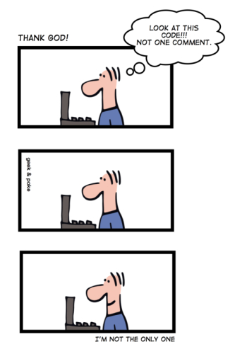Enough of the "scientific" exposition!
Let's rise the action with some examples, shall we?
Bad Comments
|
|
Mumbling I

Mumbling II

Mumbling III
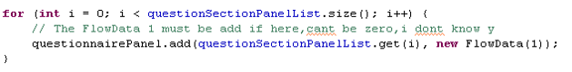Mumbling IV
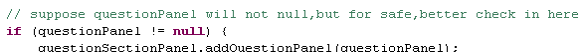Redundant Comments I

Redundant Comments II
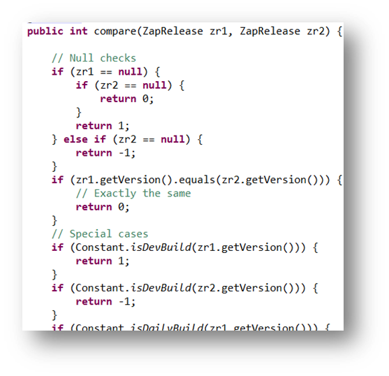Redundant Comments III
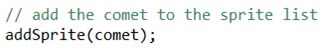Misleading Comments
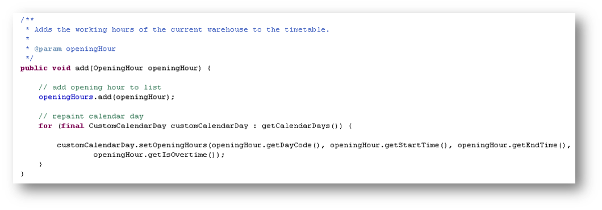The Batman Mode™ Metaphor
When there is a mystery or crime to be solved, Batman will utilize his brain and all kinds of fancy gadgets to get it done! He will analyze, investigate and deduce until he has the answer. For him as a costumed Super Hero Detective it's part of the job! Software engineers should never have to go into Batman Mode™ to investigate comments!
What possible conclusions are there?
- There was a repaint happening some commits ago. The comment just got obsolete!
- There was a repaint happening some commits ago. That it's gone was an accident!
- There was no a repaint happening so far. But it should have been added by now!
- The repaint is still happening as a hidden side effect somewhere in the code!
- The developer actually wanted to type
// repeat for all calendar days!
Mandated Comments
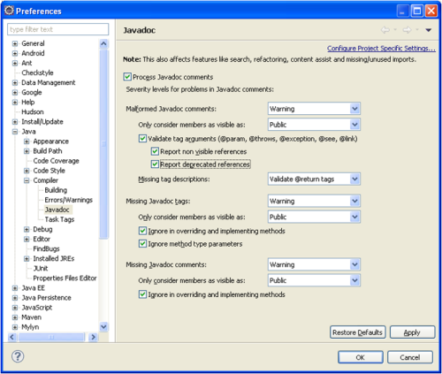Journal Comments
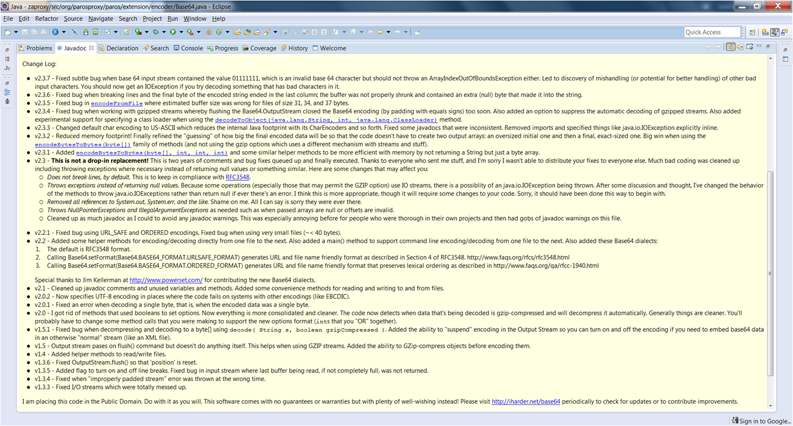Noise Comments
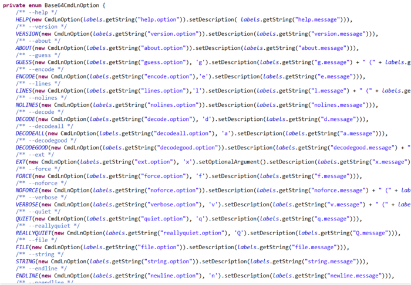Scary Noise
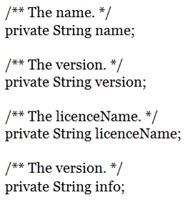Position Markers
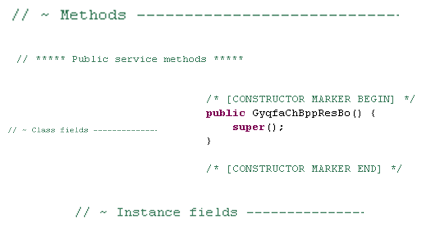Exception: Good Position Markers
If you are using some graphical UI editor or other code generator, the position markers they introduce are fine! Removing them would most likely break stuff!
Closing Brace Comments I
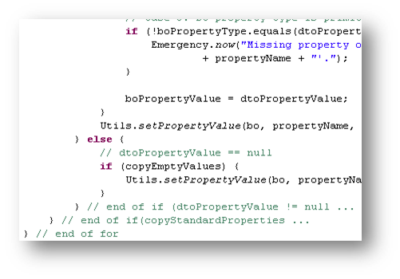Closing Brace Comments II
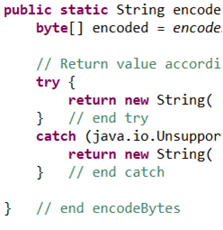Closing Brace Comments III
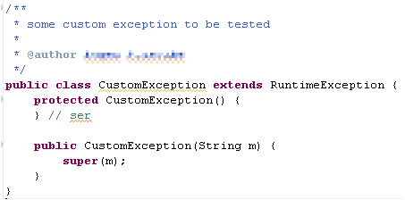Attributions and Bylines I
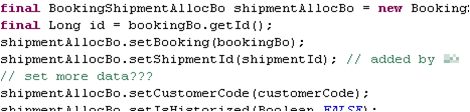Attributions and Bylines II
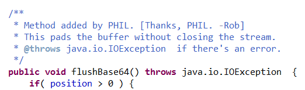Geek & Poke explains
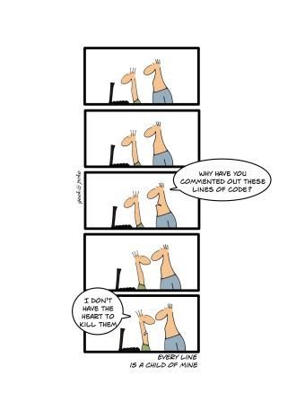Commented-Out-Code
Commented-Out-Code I

Commented-Out-Code II
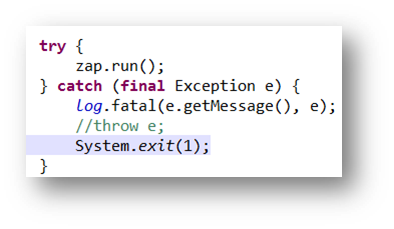Commented-Out-Code III
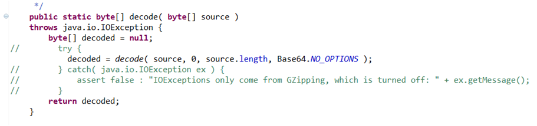Nonlocal Information I
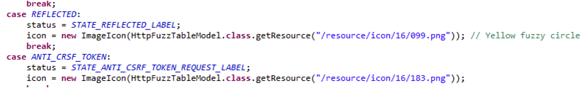Nonlocal Information II
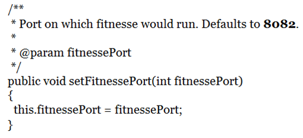Too much Information
Inobvious Connection
Function Headers
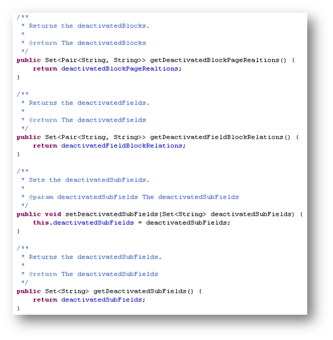Javadoc in nonpublic Code
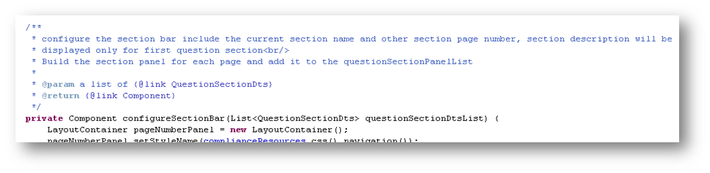And now for something completely different
(Intentionally unexpected intermission in the narrative arc)Good Comments
- Legal Comments
- Public API Javadoc
- Informative Comments
- Explanation of Intent
- Clarification
- Warning of Consequences
- TODO Comments
Legal Comments
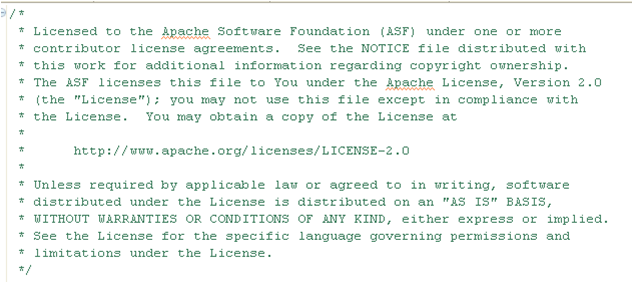Public API Javadoc
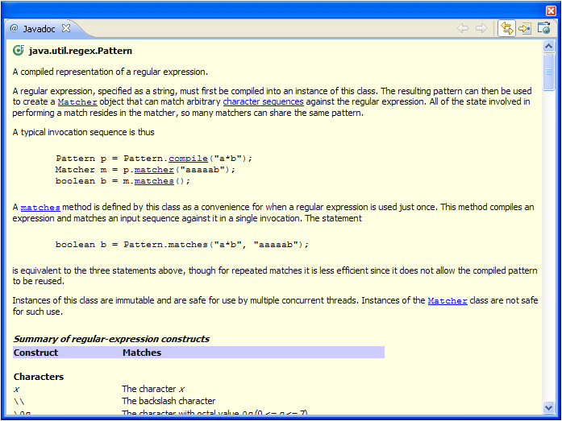Informative Comments I
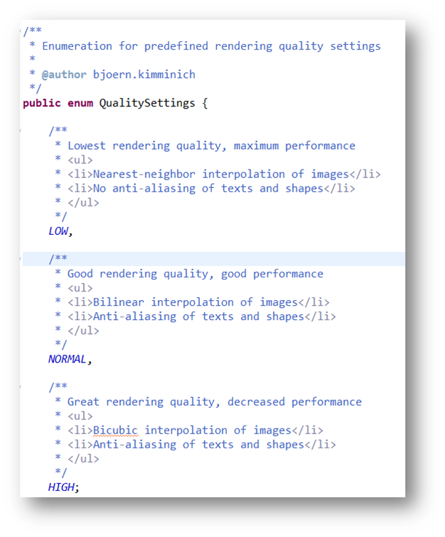Informative Comments II
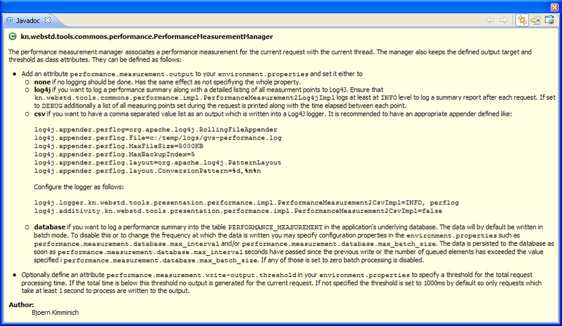Explanation of Intent I
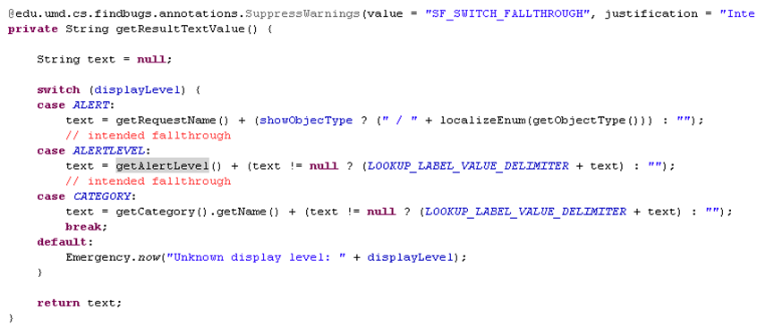Explanation of Intent II
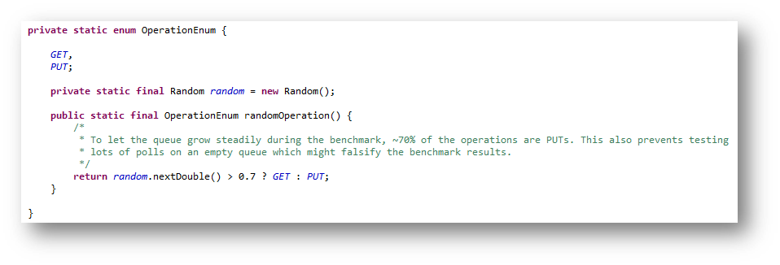Clarification I
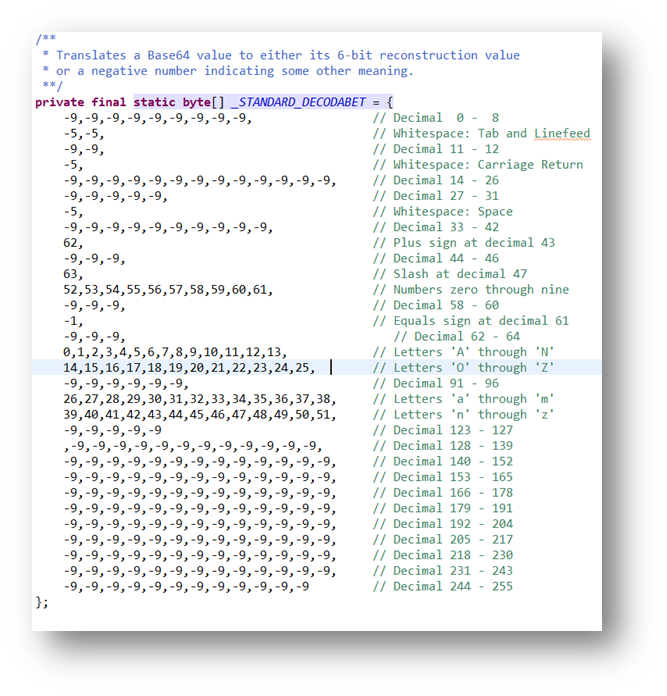Clarification II
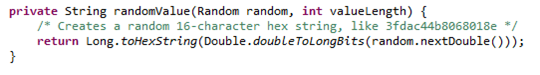Warning of Consequences I
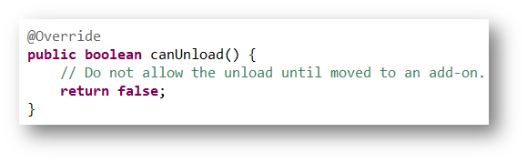Warning of Consequences II
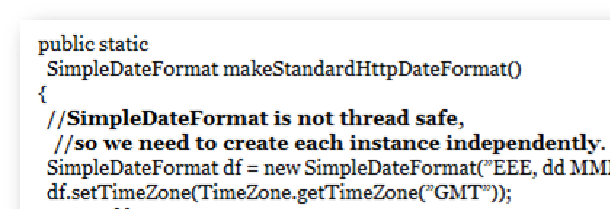TODO Comments I
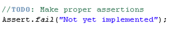TODO Comments II
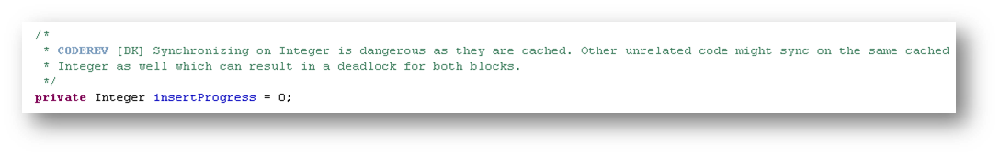TODO Comments III
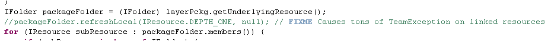Left-over TODO Comments
But you promised us a climax!!!
Closing a talk about how bad most comments are with good examples seems pretty anticlimactic! I guess we need something climactically bad to get back on track now...
Climax: UnCamelCasing™
The art of splitting class/method names into Javadoc while providing zero additional information. There are different skill levels of this art comparable to belts in martial arts.
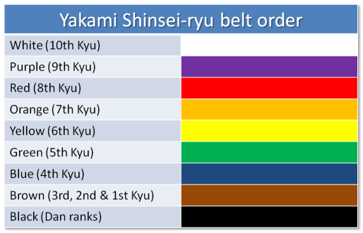UnCamelCasing™ Example
Skill Level White Belt
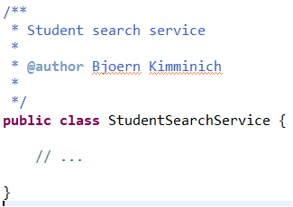UnCamelCasing™ Example
Skill Level Green Belt
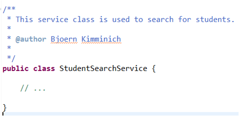UnCamelCasing™ Example
Skill Level Brown Belt
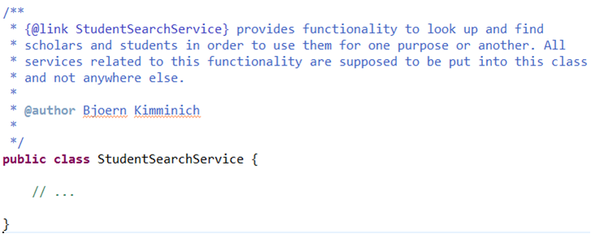UnCamelCasing™ Example
Skill Level Black Belt
| It is impossible to reach a black belt in UnCamelCasing™... |
| ...at least with manually writing code comments, that is! |
| The real "pro" UnCamelCasers™ go even further... |
| ...and automate the UnCamelCasing™ process entirely! |
Bonus Climax: JAutodoc
"JAutodoc is an Eclipse Plugin for automatically adding Javadoc and file headers to your source code. It optionally generates initial comments from element name by using Velocity templates for Javadoc and file headers."
// No Comment!

Thanks for your attention...
- ...and for not writing comments unless you absolutely have to!
- ...and for deleting all bad comments you come across from now on!
- ...and for not using UnCamelCasing™ to create documentation!
- ...and for never installing/immediately uninstalling JAutodoc!
by Björn Kimminich / kimminich.de
These slides are publicly available on GitHub and Slideshare. Copyright (c) 2015-2016 Björn Kimminich - Created with reveal.js - The HTML Presentation FrameworkMost code examples shown in this presentation are from real-life project code. The
@author tags or other
personal data have been anonymized in order to protect the authors from prosecution by Clean Code zealots or other Quality Assurance
authorities. No software engineers were harmed during or after the creation of this presentation! Please consider the environment
before printing this slide deck!